❶ 100
❷ 6
❸ 119
❹ 2222
❺ 7.38
❻ 2220.889
❼ 519.6
❽ 3571.3
❾ 999999999.999999999
❶ 100
❷ 1100
❸ 0.46
❹ 16.5
❺ 2795
❻ 103.02
❼ 220
❽ 8.88
❾ 10.2
❿ 1.5
⓫ 0.973
⓬ 0.4
⓭ 0.7777
⓮ 2.22
⓯ 2.22
⓰ 66.6
⓱ 15
⓲ 3.65
⓳ 3026
⓴ 7575
0.2579
❶
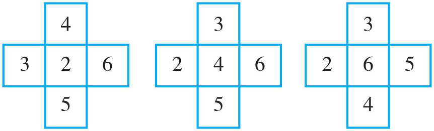
❷
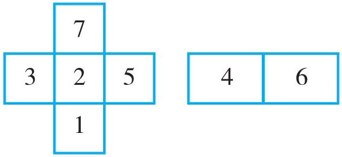
❸
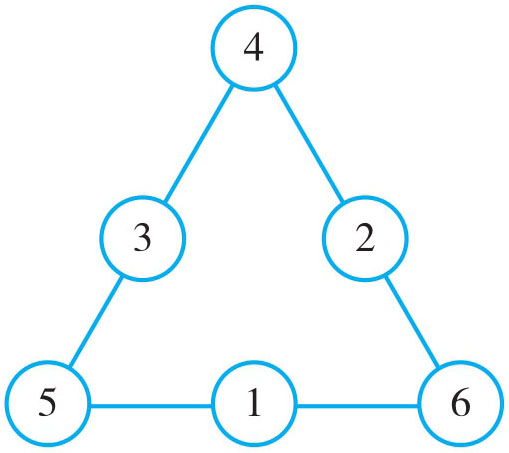
❹
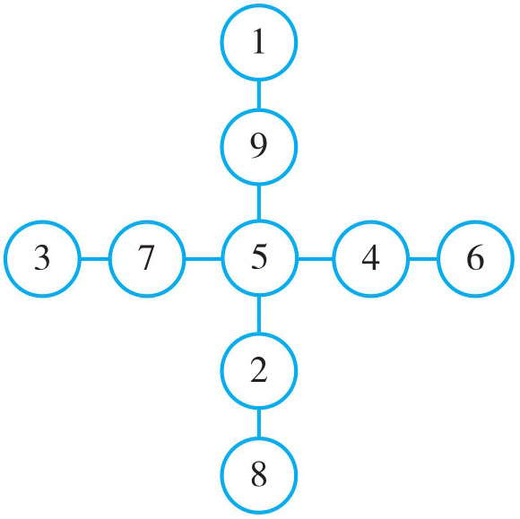
❺
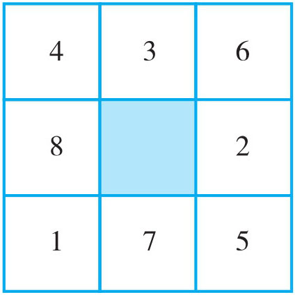
❻ 答案不唯一。
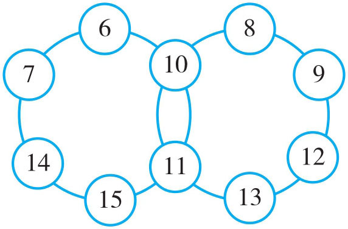
❼
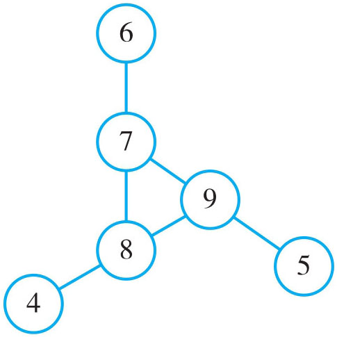
❽
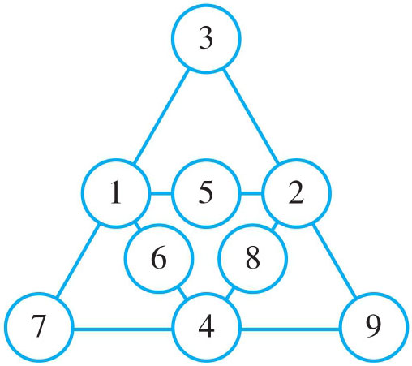
❾ 两种填法：
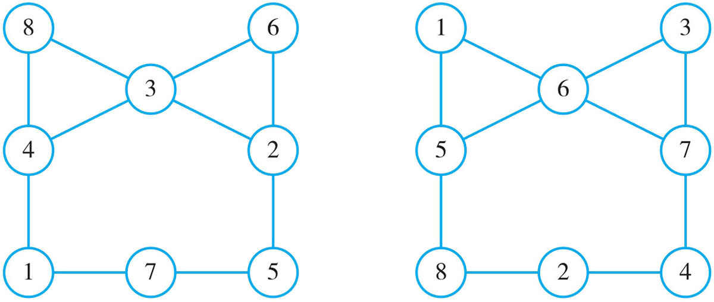
❶ 1080°
❷ 65°；125°
❸ 一个，三角形；一个，四边形；无数个
❹ 十一边形
❺ 1620°
❻ 144°
❼ 正二十边形
❽ 360°
❾ 一个n 边形从一边上的P 点引对角线，得到（n -1）个三角形，它们的内角和就为(n -1)×180°，这样求出的内角和就多算了以点P 为顶点的一个平角，所以还要减去180°，(n -1)×180°-180°=(n -1-1)×180°=(n -2)×180°。
❶ 5厘米
❷ 18厘米
❸ 21平方厘米
❹ 12平方厘米
❺ 方法一：2×8÷2=8（平方厘米） 方法二：(8+4+2)×8÷2-(8+4)×8÷2=8（平方厘米）
❻ 28平方厘米
❼ 30平方厘米
❽ 20平方厘米
❾ 6×6÷2=18（平方厘米）提示：做辅助线将面积转化到小三角形内，再计算。
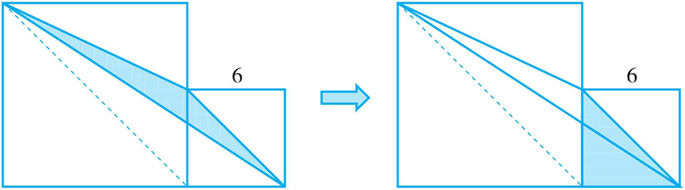
❶ 2100平方厘米
❷ 98平方米
❸ 33平方厘米
❹ 530平方厘米
❺ 840平方米
❻ 25.6平方厘米
❼ 181.4平方厘米
❽ 96平方米
❾ 28平方厘米
❶ 148下
❷ 5元
❸ 35
❹ 90分
❺ 75千米／时
❻ 甲：92分；乙：98分
❼ 5亩
❽ 3次
❾ 20个字
❶ 学生：125名；车：4辆
❷ 学生：3名；彩色笔：27支
❸ 70人
❹ 18户
❺ 35名
❻ 80件
❼ 学生：30人；饼干：100块
❽ 70个
❾ 48名
❶ 单打：8张；双打：6张
❷ 大篮球：28个；小篮球：22个
❸ 21张5元；42张10元
❹ 22道
❺ 鸵鸟：16只；长颈鹿：23只
❻ 珍珠鸡：22只；荷兰兔：8只
❼ 12张2元；22张5元
❽ 女生：25人；男生：21人
❾ 10个
❶ 826千米
❷ 294米
❸ 930千米
❹ 甲：60千米／时；乙：90千米／时
❺ 560千米
❻ 56千米
❼ 16小时
❽ 900米
❾ 8400米
❶ 6分钟
❷ 能，因为客车共行3小时，小轿车只要2.5小时就能追上客车。
❸
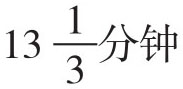
❹ 1200米
❺ 26千米
❻ 900米
❼ 1680米
❽ 上午11时
❾ 260米
❶ 3.3千米／时
❷ 1千米／时
❸ 6千米／时
❹ 船速：13.5千米／时；水速：2.5千米／时
❺ 路程：252千米；需14小时
❻ 顺水：9小时；逆水：11小时
❼ 17千米／时
❽ 30小时
❾ 4小时
❶
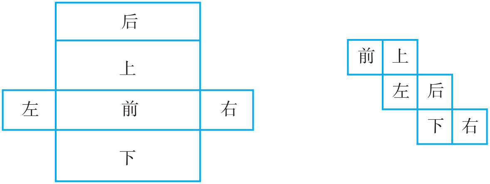
❷ 表面积：832平方厘米；体积：1509立方厘米
❸ 表面积：576平方厘米；体积：648立方厘米
❹ 30立方厘米
❺ 表面积：1900平方厘米；容积：6升
❻ 3600平方厘米
❼ 最大：3320平方厘米；最小：2180平方厘米
❽ 6个
❾ 104平方厘米
❶ 600立方厘米
❷ 2.75立方分米
❸ 12立方分米
❹ 14.4立方分米
❺ 1.5厘米
❻ 7.2立方分米
❼ 24分米
❽ 45立方分米
❾ 5厘米
❶ 略
❷
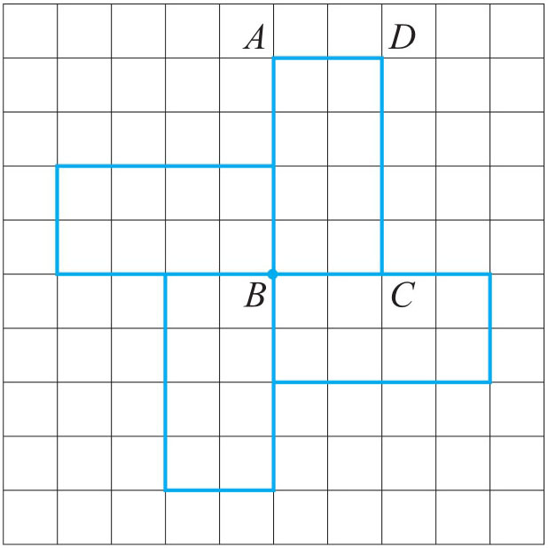
❸ 70°
❹ 18216302659
❺ 略
❻ 略
❼ 8601968
❽ 60度
❶ （1）a ；2a ；4a （2）2b ；2b ；4b （3）3m +2（4）8x ；ax +by
❷ 5+x =150；3y +10=55；3m -3=63；4a +2b =420
❸ 右
❹ （1）7.1（2）11（3）2.75（4）0.2
❺ 65
❻ a =1；b =0.8
❼ m =1.4；n =2.4；r =0.6
❽ 2.7
❶ 略
❷ 240元
❸ 小丽：9岁；奶奶：63岁
❹ 80千米／时
❺ 各带400元
❻ 上层：150只；下层：100只
❼ 125元
❽ 7轮
❾ 3850元
❶ 蓝色
❷ 1
❸ C
❹ 星期五
❺ 4
❻ 白珠；红珠92颗，白珠183颗，黑珠225颗
❼ “维学”
❽ 2
❾ (586-428)÷12=13（周）……2（个），12÷2×2=12（天）
❶ 18种，80种
❷ 80种
❸ 12种，45种
❹ 60种
❺ 1000000种
❻ 5×4×3×2+4×4×3×2=216（个）
❼ 324
❽ A 、B 只能为1和5，C 、D 、E 、F 只能为2、3、6、0中的一个，所以共有2×4×3×2=48（个）
❾ 5×4×4×3×3=720（种）
❶ 10人
❷ 44名
❸ 45人
❹ 34人
❺ 43人
❻ 4人
❼
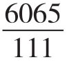
❽ 60人
❾ 1225平方厘米
❶ 通过关键因子1+3=4找关键数，后报者每次凑4个数必胜。
❷ 甲胜
❸ 根据100÷7=14……2可得，付强先报2个数，然后每次报的数的个数与付亮报的凑成7个，就一定能胜。
❹ 小游先从60颗一盒中拿走7颗糖。再由小石取，每次小游拿的和小石同样多，直到最后，小游一定胜。
❺ 因为1801=6×300+1，所以贾伟先抓珠子，韩勇使自己抓的个数与贾伟保持和为6，双方在取了300次以后，剩下最后一个珠子，贾伟不得不取走。贾伟输，故韩勇必赢。
❻ 甲必胜，根据405=1 +2×202，将405分组：（1），（2，3），（4，5），（6，7），… （404，405），首先甲擦去“1”这个数，接着当乙擦去某组中的一个，甲就相应地擦去该组中的另一个数，故剩下的最后两个连续自然数一定互质。故甲必胜。
❼ 因两盒数目相等，先取者输，两盒数目不等，谁先取走多出的球，谁胜。所以先取者在12个乒乓球中取走4个球，剩下的三堆分别是3、5、8个球，此时无论对方怎么取，先取者可以造成两堆同样多而获胜，因此，先取者获胜。
❽ 乙第一步走4格，和第一格凑成“5”。以后每次和甲跳的格数也凑成5。最后剩下一格，只能甲跳，所以甲必输。
❶ 丙说的谎话。是丙打碎的。
❷ 付强教数学，龚斌教体育，姜艳教语文。
❸ 丙讲真话，乙见过
❹ A：15分；B：15分；C：5分；D：10分；E：5分
❺ 蓝配灰，灰配黑，黑配蓝
❻ 第一袋：绿；第二袋：黄；第三袋：红；第四袋：蓝；第五袋：白
❼ 薛峰是工程师，马兵是技术员，开太是教师
❽ 根据72=1×6×12=1×8×9=2×3×12=2×4×9，72=2×6×6=3×3×8，72=3×4×6。推出：楼号是14，三个孩子的年龄分别是3岁、3岁、8岁。
❾ 二
❶ 略
❷ <；>
❸ >；<
❹
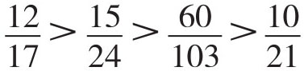
❺
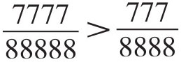
❻
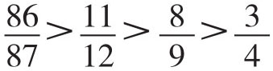
❼
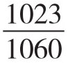
最大，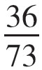
最小。❽
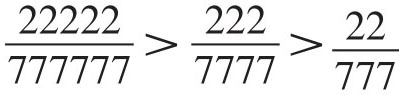
❾
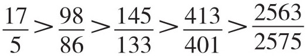
❶
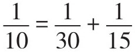
（答案不唯一）❷
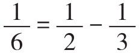
（答案不唯一）❸
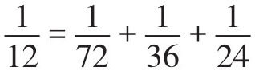
（答案不唯一）❹
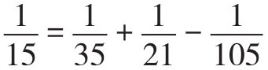
（答案不唯一）❺
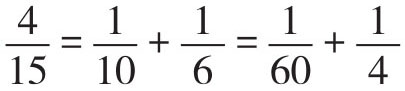
❻
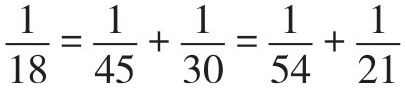
（答案不唯一）❼
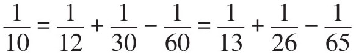
❽
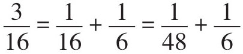
❾
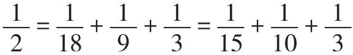
❶ 6
❷
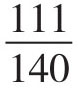
❸
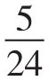
❹
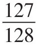
❺ 3
❻
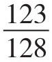
❼
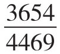
❽
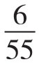
❾
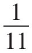